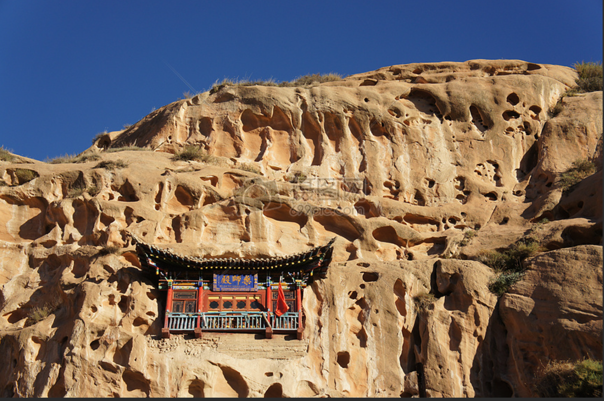
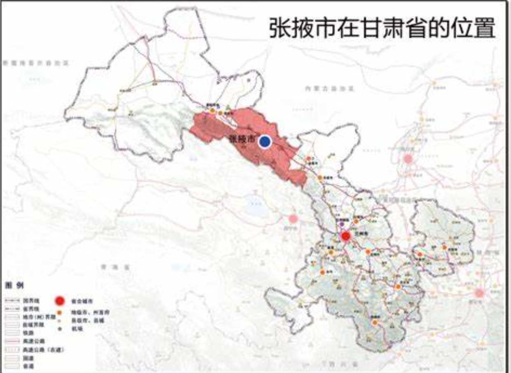
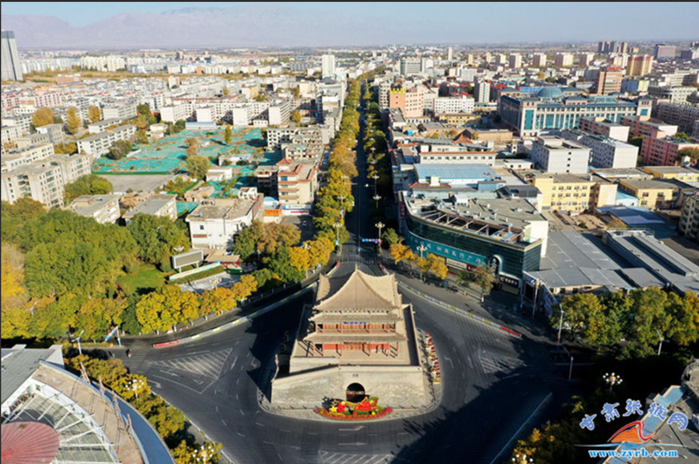
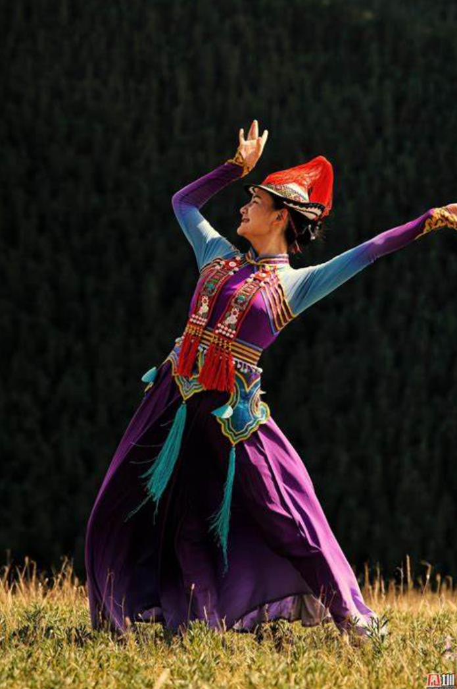

历史文化
张掖有着悠久的历史，早在新石器时代就有人类在此活动。西汉时期，汉武帝派张骞出使西域，开辟了丝绸之路，张掖成为丝绸之路上的重要驿站。
公元609年，隋炀帝西巡至张掖，会见西域27国使者，举行了"万国博览会"，这是中国历史上最早的世博会之一。
张掖还是佛教东传的重要通道，马蹄寺、大佛寺等古迹见证了佛教文化在这片土地上的繁荣与发展。


地理环境
张掖市位于甘肃省西北部，河西走廊中段，地处东经97°20′至102°12′，北纬37°28′至39°57′之间。
全市总面积4.09万平方公里，地形复杂多样，南部为祁连山区，北部为荒漠戈壁，中部为走廊平原，形成了"一山一水一平原"的独特地理格局。
祁连山冰川融水形成了黑河、山丹河等河流，孕育了肥沃的绿洲，使张掖成为河西走廊上的"塞上江南"。
城市发展
近年来，张掖市坚持"生态优先、绿色发展"的理念，充分发挥自身优势，积极推进经济结构调整和转型升级。
旅游业成为张掖的支柱产业，七彩丹霞、马蹄寺、平山湖大峡谷等景点吸引了大量国内外游客。同时，现代农业、新能源、文化产业等也取得了长足发展。
城市基础设施不断完善，教育、医疗、文化等社会事业全面进步，人民生活水平显著提高。


人口与民族
截至2023年，张掖市常住人口约120万人，其中城镇人口约60万人，乡村人口约60万人。
张掖是一个多民族聚居的地区，有汉族、回族、藏族、裕固族等38个民族，其中裕固族是中国独有的少数民族之一，主要分布在肃南裕固族自治县。
各民族在长期的生产生活中，相互尊重、相互学习、相互帮助，共同创造了丰富多彩的民族文化。